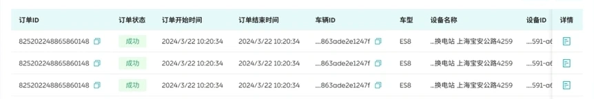
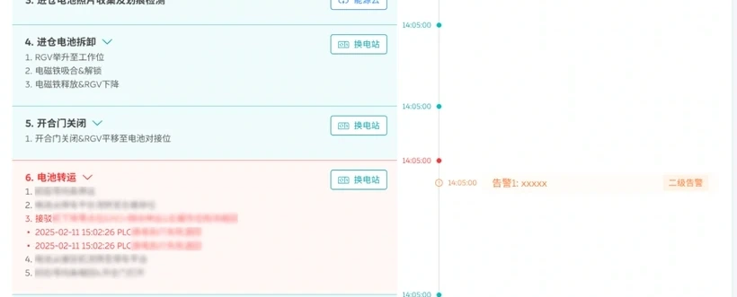

蔚来能源 · 企业 Web
让换电异常更容易排查
为设备监测平台重整订单看板与换电详情，让运维能从列表定位问题，再进入步骤排查。
蔚来能源 · 参与换电画像版本迭代
体验操作订单看板、流程详情与状态组件规范。

设计稿交互重现
一笔成功订单，哪一步曾出现告警？

从列表打开一笔示例订单
先用列表中的状态辨认整单结果，再进入示例详情。

筛选后仍需查看详情
列表现在只显示成功订单。打开一笔示例详情，判断它在执行中是否有告警。

找出机械换电阶段
订单页首显示成功。沿一级步骤寻找标出异常的机械换电阶段。
定位电池转运
在这一阶段的二级步骤中，电池转运以告警色及文字标示。点选它查看记录。

在同一行核对步骤与告警
这张原稿里，电池转运曾有二级告警，而整单最终成功。保留这两层状态，运维才有线索回溯过程。
示例数据 · 根据原设计稿制作
设计取舍
订单结果和执行过程是两个判断层次。列表适合确认整单状态；要找出中间曾经挂起的步骤，就需要保留阶段、时间线与告警的关系。
走查时我会看什么
可让运维说出整单结果、告警所在阶段与二级步骤。三个答案可分别检查信息层级是否清楚。
设计思路
当一笔换电订单出现异常，运维该如何从订单列表快速定位到具体步骤？
- 先找订单缩小查询范围，确认订单状态
- 再判阶段用一级步骤定位异常所在阶段
- 查看细节结合二级步骤、时间与告警排查
从排查任务定义问题
我在蔚来能源参与设备监测平台「换电画像」的版本迭代。一次排查实际包含两类判断：先找出目标订单，再判断哪一步出了问题。前者需要在大量记录里缩小范围，后者需要理解一笔订单内的执行过程。
旧版把多级步骤按先后顺序连续铺开，时间顺序完整，但查找某个阶段时需要在长页中反复定位。改版目标因此落在两个可观察的任务上：能否准确找到目标订单，以及进入详情后能否读懂异常发生在哪个阶段。
按任务拆分界面
看板解决「找哪条」，详情解决「为什么异常」。两层信息的密度和组织方式不同，我把它们分开设计。
- 先筛选，再辨别状态
- 将时间、设备类型、订单 ID 和状态作为组合条件。知道订单 ID 时可以直找，线索较少时可以先按条件收窄，再用状态标签扫读。
- 保留顺序，缩短查找路径
- 详情保留执行时间线，并将一级阶段与二级步骤分区。运维可以先切换到相关阶段，再查看该阶段的时间、状态和告警。


交付与验证思路
交付包含订单看板、流程详情和状态组件规范。状态标签在列表和详情中沿用同一套含义，方便用户在不同页面识别同一种状态。同期还参与了家用充电桩小程序，覆盖启动、充电中、完成和异常反馈。
- 如何检查设计是否奏效
- 让运维分别完成「从已知 ID 查单」和「按条件筛出失败订单，再指出异常步骤」。可记录定位用时、是否找对步骤、以及是否需要回到列表重查。